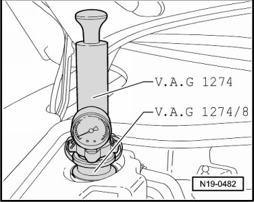
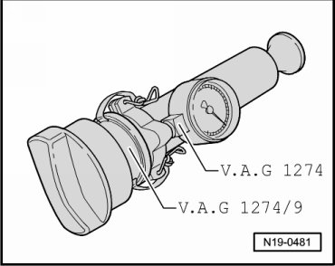

Cooling System: Testing and Inspection
Cooling System, Checking for Leaks
Special tools, testers and auxiliary items required
• Cooling system tester (V.A.G 1274)
• Adapter (V.A.G 1274/8)
• Adapter (V.A.G 1274/9)
- Screw the cooling system tester (V.A.G 1274) with the adapter (V.A.G 1274/8) onto the reservoir as shown.

- Operate pump and generate a positive pressure of 1.4 to 1.6 bar.
- Check cooling system for leaks.
- Also test the cap:
- To do this, screw the adapter (V.A.G 1274/9) onto the cooling system tester (V.A.G 1274).

- Operate pump and generate a positive pressure of 1.4 to 1.6 bar.
- The pressure relief valve must not open before 1.4 bar.
- If the valve in the cap opens prematurely, replace the cap.